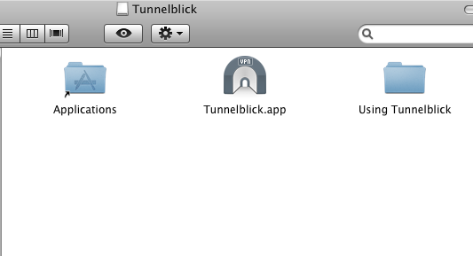
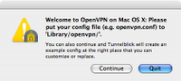
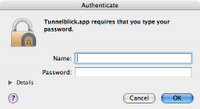
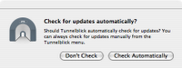
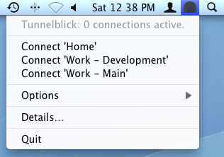
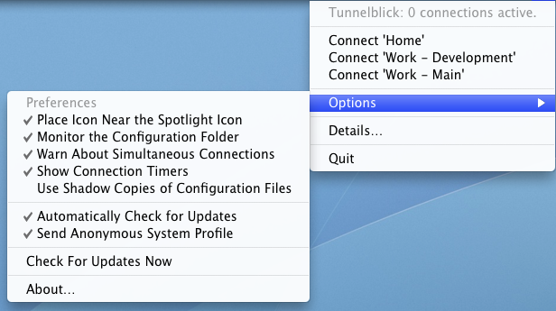

Tunnelblick is an OS X Graphical User Interface (GUI) for the OpenVPN free and open-source program, which maintains VPN "tunnels". It provides easy-to-use control of OpenVPN server and/or client connections. It is written in Cocoa and runs on OS X Tiger (10.4), Leopard (10.5), and Snow Leopard (10.6). It comes as a ready to use Universal application with all necessary binaries and drivers, including OpenVPN and tun/tap. Tunnelblick is free software licensed under the GNU General Public License (GPL) Version 2.
For more information, including wikis and a discussion group, see the Tunnelblick home page.
This document describes how to use Tunnelblick version 3.0b24.
The latest versions of this document and related documents including release notes, FAQ, and instructions for building Tunnelblick from the source code may be found in the Tunnelblick Wiki.
PLEASE DO discuss any problems on the Tunnelblick Discussion List.
PLEASE DO NOT post comments at the bottom of this page.
This document contains the following sections:
To install Tunnelblick, first download it from the Downloads page, then double-click the downloaded .dmg file. An icon for a "Tunnelblick” disk will appear on the Desktop, and a new window similar to the following will appear:

Drag Tunnelblick.app (which may be labeled "Tunnelblick” without the ".app”) and drop it on the shortcut to the Applications folder. This will copy the application from the .dmg into the Applications folder. You may then close the window and eject the "Tunnelblick” disk icon.
There is no need to install OpenVPN separately - the Tunnelblick application contains both the Tunnelblick GUI and OpenVPN. See the Tunnelblick release notes (or click "About…" in Tunnelblick) to determine the version of OpenVPN included with the version of Tunnelblick that you are using.
If you wish Tunnelblick to appear in the Dock, navigate to Applications, and drag and drop Tunnelblick to the Dock.
To uninstall Tunnelblick, move Tunnelblick.app from the Applications folder to the Trash. Other than the preferences and configuration files described in "File Locations", there are no other files installed -- OpenVPN, the tun/tap kernel extensions, and up/down scripts are contained within the Tunnelblick.app package and are loaded only when needed directly from there. Tunnelblick may store passphrases or passwords in the Keychain at the user's request.
Each tunnel to be opened by Tunnelblick needs an OpenVPN configuration file. Tunnelblick considers any file located in ~/Library/Application Support/Tunnelblick/Configurations with an extension of .conf or .ovpn to be a configuration file, and presents each such file as a potential "connection”. (The "~" refers to your home folder.) Often these configuration files will be supplied to you. Refer to the OpenVPN documentation for details about what the configuration file should contain. (Note that some OpenVPN options are available only on Windows.)
When using a "deployed" version of Tunnelblick, configuration files are all located within the Tunnelblick application itself, so ~/Library/Application Support/Tunnelblick/Configurations is not used for configuration files (although it may be used for keys, certificates, and/or shell scripts). See the Deploying Tunnelblick wiki for details.
Tunnelblick monitors the folder that contains the configuration files. If a configuration file is added, the new configuration is available immediately without restarting Tunnelblick or disturbing existing connections. If a configuration is removed from the folder, any connection using that configuration is immediately disconnected. To disable this behavior, use "doNotMonitorConfigurationFolder". (See the "Preferences" section.)
The configuration file may also be "shadow" copied to the /Library/Application Support Tunnelblick/Users/username folder. This is done transparently for configuration files located on network volumes. The user should never manipulate this folder or its contents directly; Tunnelblick will do so automatically. (See "useShadowConfigurationFiles" in the "Preferences" section.)
If Tunnelblick's "Set nameserver” option is used:
Tunnelblick preferences are contained in ~/Library/Preferences/com.openvpn.tunnelblick.plist. (The "~” indicates your home folder.) Deployed versions of Tunnelblick may contain a "forced-preferences.plist" file within the Tunnelblick application itself; see the Deploying Tunnelblick wiki for details.
OpenVPN configuration files are stored in ~/Library/Application Support/Tunnelblick/Configurations. Usually the key and certificate files are stored there, too. Since these files are all located in the user's Library folder, they must be set up separately for each user.
Note 1: Prior to Tunnelblick version 3.0b24, configuration files were stored in ~/Library/openvpn. Version 3.0b24 and later versions automatically move that folder to its new location, and replace it with a symbolic link to the new location.
Note 2: Deployed versions of Tunnelblick contain the configuration file(s), so they do not need to be set up for each user -- any user that can access Tunnelblick.app can connect to VPN.
"Shadow" copies of configuration files (if they exist) are located in /Library/Application Support Tunnelblick/Users/username. (See "useShadowConfigurationFiles" in the "Preferences" section.)
See the Deploying Tunnelblick wiki for details of file locations when using a deployed version of Tunnelblick.
Within the Tunnelblick.app application, client up/down scripts and openvpn-down-root.so are located in Tunnelblick.app/Contents/Resources (see the "Set nameserver” checkbox in the "OpenVPN Log Window” section). To access Tunnelblick.app/Contents in the Finder, control-click Tunnelblick.app in the Applications folder, then click on "Show Package Contents”.
When there are no configuration files in ~/Library/Application Support/Tunnelblick/Configurations (which is usually the case the first time Tunnelblick is run by each user when using a non-deployed version of Tunnelblick), the following screen will be displayed:

If you click "Quit”, Tunnelblick will quit without doing anything. If you click "Continue”, Tunnelblick will create and save an example OpenVPN configuration file, ~/Library/Application Support/Tunnelblick/Configurations/openvpn.conf, and then open it in TextEdit for you to modify. If you have an OpenVPN configuration file that you are supposed to use, copy its contents, paste them into this file (replacing the default contents), save, and exit TextEdit. Your configuration (named "openvpn.conf”) is all set. Tunnelblick changes the ownership of OpenVPN configuration files to root, so it is protected against unnoticed and possibly malicious changes.
If you have received key files or certificate files together with your personal configuration file, please make sure to put them in ~/Library/Application Support/Tunnelblick/Configurations/ (or another location as specified by your network administrator). OpenVPN will try to locate the key files in this folder, unless absolute paths to them are specified in the configuration file.
The first time Tunnelblick is run on a particular computer (but only the first time the first user runs it), it will display the following screen:

Please enter the name and password of a computer administrator. Tunnelblick's imbedded OpenVPN needs root privileges because it needs to modify network settings by configuring new network devices, changing routes, and adding and removing nameservers. Because we don't want you to enter your administrator account name and password every time you start a VPN connection, Tunnelblick comes with a setuid root binary that allows it to do exactly one thing: start a VPN connection with super user rights. Tunnelblick needs your administrator account name password only on its first start after installation, so it can create this setuid root binary.
The second time Tunnelblick is run by each user, a screen similar to the following will be displayed:

Specify whether or not you wish to have Tunnelblick check for updates. Each time an update is available, you will be given a choice of whether to install the update or not.
Whenever a configuration file changes, you will need to enter the name and password of a computer administrator. This is done as a security measure: because configuration files can contain references to scripts that run as root, they are owned by root and an administrator must grant permission to use them.
Once Tunnelblick has been started, you control it from the icon in the Status Bar at the top of your screen. The Tunnelblick icon is usually placed between the time and the Spotlight icon. When no VPN connection is active, the icon is dark, indicating a closed tunnel:

If you click on the icon, you'll see a drop down menu similar to the following:

There will be a "Connect” menu item for each .ovpn or .conf file in ~/Library/Application Support/Tunnelblick/Configurations/. Click on one to establish the corresponding pre-configured VPN connection. To illustrate the connection being established, three dots will appear in the menu item, and the Tunnelblick icon will darken and lighten repeatedly. If the connection is successfully opened, the icon will change to show an open tunnel:

You may be asked for a passphrase or username/password combination if key/certificate files are not being used. You can save your passphrase or password in Apple's Keychain by checking the appropriate checkbox.
The connection will be active as long as you do not end it or log out. Putting your computer to sleep or losing contact with the server (by lack of wlan signal, for example) will make Tunnelblick periodically try to re-establish the connection.
If a connection error occurs, or in the unlikely event of an interface crash, Tunnelblick will terminate the VPN tunnel and record the error in the Console Log.
Use "Disconnect” from the drop-down menu to close the VPN connection. Use "Quit” to close all open connections and quit the program and prevent Tunnelblick from starting itself at your next login at your computer.
If Tunnelblick is running when you logout (or your computer crashes, or is shut down or restarted), then Tunnelblick will be started automatically upon login. To stop Tunnelblick from being started automatically upon login, be sure to quit Tunnelblick before logging out, either by using the "Quit” command, or by using Command-Q (Apple-Q) when the "OpenVPN Log” or "About…” window is active. (Don't confuse this automatic launch of Tunnelblick upon login with the "Automatically connect on launch” option, which causes a connection to be established when Tunnelblick is started.)
When the Tunnelblick menu is displayed, if you hover over "Options", the Options Submenu appears:

Click on an item in the Options Submenu to change a preference, check for updates, or display the "About" window. For more details on preferences, see Preferences, below.
Some deployed versions of Tunnelblick do not display the Options Submenu (it is controlled by a preference), in which case the "Options" menu item is replaced by "About Tunnelblick..."
Click on the Tunnelblick icon in the Status Bar at the top of your screen between the time and the Spotlight icon then click on "Details…” to obtain details for all connections (open or closed). A window similar to the following will appear:

There will be a tab for each connection (i.e., each .ovpn or .conf file), whether the connection is open or closed. Each tab contains a pane with the OpenVPN Log for the connection and two checkboxes that provide options for that connection:
When a connection is attempted, the script for "Set nameserver” saves the current DNS settings and removes DNS settings that were set by DHCP (manual DNS settings are not removed). When a connection is disconnected (or if it fails to connect), the scripts restore the saved DNS settings. The scripts do not support the simultaneous use of two or more nameservers for different domains; custom up/down scripts must be used for this purpose.
In addition, the "OpenVPN Log” window contains four buttons:
You may use the standard keyboard shortcuts in the "OpenVPN Log" window: Command-C, Command-X, and Command-V for copy, cut, and paste; and Command-A, Command-M, Command-W, and Command-Q to select all the text in the log that is currently being displayed, minimize the window to the dock, close the window, and quit the program.
Click on the Tunnelblick icon in the Status Bar at the top of your screen between the time and the Spotlight icon, then (if it is visible) click on "Options", then on "About Tunnelblick…” to open a window with information about the versions of Tunnelblick and OpenVPN that are running and a link to the Tunnelblick website.
If you are using DHCP, wish to use DNS and WINS servers at the far end of the tunnel when connected, and the VPN server you are connecting to "pushes" DNS and WINS settings to your client, put a check in the "Set nameserver" checkbox. (This is the situation for most users.)
If you are using DHCP, wish to use your original DNS and WINS servers when connected, and the VPN server you are connecting to does not "push" DNS or WINS settings to your client, un-check the "Set nameserver" checkbox.
If you are using manual settings, different versions of OS X behave differently. This is due to a change in network behavior in Snow Leopard and is beyond the scope of this project to fix.
If you're using Leopard (10.5) or Tiger (10.4), then it is possible to use the VPN-server-supplied DNS and WINS settings in addition to your manual settings by checking the "Set nameserver" box. However, your manual settings will always take precedence over any VPN server-supplied settings. If "Set nameserver" is un-checked, you will continue to use only your manually-configured settings and any VPN server-supplied settings will be ignored.
If you are using Snow Leopard (10.6), then your manually-configured DNS and WINS settings will always be used, and no aggregation of configurations will be performed.
If your situation is not described above (e.g., if you use manual DNS settings and wish to use DNS servers at the far end of a tunnel when connected, or you wish to use the OS X ability to use different nameservers for different domains), you must create your own up/down scripts and un-check the "Set nameserver" checkbox.
If checked (the default), the "Monitor connection" checkbox instructs Tunnelblick to monitor the connection's interface for changes. If Tunnelblick detects a change to DNS or WINS, the connection will be restarted. Under certain circumstances, repeated and unnecessary restarts are peformed; unchecking this box stops this from occurring.
Note that connection monitoring is not available unless "Set nameserver" is checked.
You can put more than one .ovpn or .conf file together with its key and/or certificate files into the ~/Library/Application Support/Tunnelblick/Configurations folder. Tunnelblick interprets each .ovpn or .conf file in the ~/Library/Application Support/Tunnelblick/Configurations folder as a configuration file for a different connection; each of the connections will be available in the drop down menu and shown as a separate tab in the "OpenVPN Log” window.
Tunnelblick can maintain multiple simultaneous open connections to different VPNs.
However, this is for experts only:
Tunnelblick was designed as a persistent menu icon that survives reboots. To this end, it inserts itself into the login items when it is started and only removes itself from the login items when you choose Quit from the menu or Command-Q from the "OpenVPN Log” window. So if you just log out, shut down, or restart your computer, or it crashes, the next time you log in, Tunnelblick will automatically start. If you do not want Tunnelblick to start automatically, quit Tunnelblick before you log out, shut down, or restart.
You can specify that a connection automatically be opened when Tunnelblick starts by putting a check in the "Automatically connect on launch” checkbox for that connection. The checkbox is located on the connection's tab in the "OpenVPN Log” window.
When using "Set nameserver", it is usually necessary to avoid using the OpenVPN "user" and "group" options. These options cause OpenVPN to drop root privileges and take the privileges of the specified user and group. It this is done, then the standard scripts that handle restarting connections when there is a transient failure fail, because they are run without root privileges. And restoring routes when a tunnel is disconnected fails, too. So the "user" and "group" OpenVPN options should not be specified.
However, starting with Tunnelblick version 3.0b22, Tunnelblick includes the "openvpn-down-root.so" plugin for OpenVPN. It is located in theTunnelblick.app/Contents/Resources" folder. This plugin, when activated by including a line in the configuration file, allows the use of the "user" and "group" options, so that OpenVPN drops root privileges, but still have the scripts run as root, so reconnecting after transient network problems, or restoring routes when a tunnel is disconnected continue to work. To activate the plugin, include the following line in your configuration file:
plugin path-to-openvpn-down-root.so path-to-client.down.osx.sh
Example: If Tunnelblick.app is located in /Applications, the line would be:
plugin /Applications/Tunnelblick.app/Contents/Resources/openvpn-down-root.so /Applications/Tunnelblick.app/Contents/Resources/client.down.osx.sh
Example: If using a "deployed" version of Tunnelblick:
plugin ../openvpn-down-root.so ../client.down.osx.sh
Note: A "deployed" version of Tunnelblick can contain a "forced-preferences.plist" file, which lists preference values which override the preferences located in ~/Library/Preferences/com.openvpn.tunnelblick.plist. See the Deploying Tunnelblick wiki for more details.
The following commonly used preferences may be examined or changed from Tunneblick's "Options" submenu:
The preference keys for the above preferences are: placeIconInStandardPositionInStatusBar, doNotMonitorConfigurationFolder, skipWarningAboutSimultaneousConnections, showConnectedDurations, useShadowConfigurationFiles, SUEnableAutomaticChecks, and SUSendProfileInfo.
(Note that some preferences are stored as the opposite of their corresponding checkbox state.)
For each configuration file, the following preferences may be examined or changed using checkboxes on the OpenVPN Log window for the corresponding configuration:
Several additional preferences cannot be viewed or modified via the user interface. They are usually used in customized or deployed versions of Tunnelblick.
The following preferences control what is displayed to the user. All default to FALSE:
The following preferences are automatically maintained by the program:
The following per-configuration preferences do not have a user interface:
CONFIGNAME-useDownRootPlugin: Causes the plugin to be loaded when the configuration is used to start a connection. The default is cleared.
CONFIGNAMEdisableEditConfiguration: Disables the "Edit configuration" button for the configuration. The default is cleared.
CONFIGNAME-keychainHasPrivateKey and CONFIGNAME-keychainHasUsernameAndPassword: These preferences are used internally by Tunnelblick to indicate the presence of passphrases (private keys) or username/password combinations that are stored in the keychain. They should not, be modified by the user, and they have special meaning in "forced-preferences.plist". Each are cleared by default.
Tunnelblick also contains openvpnstart, an OS X command line interface to OpenVPN which provides a scriptable way to create and destroy OpenVPN tunnels. openvpnstart is located in Tunnelblick.app/Contents/Resources. For details on using openvpnstart, run it from a Terminal window with no arguments.